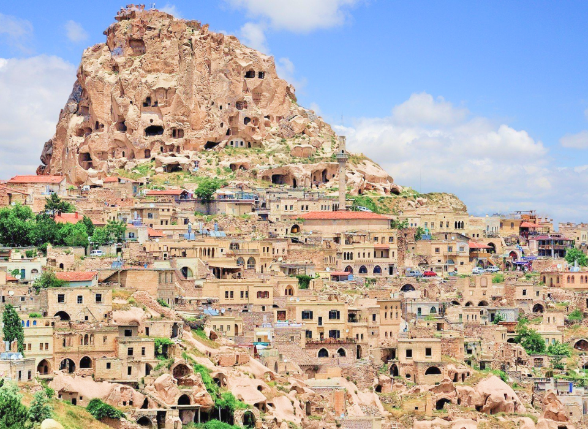
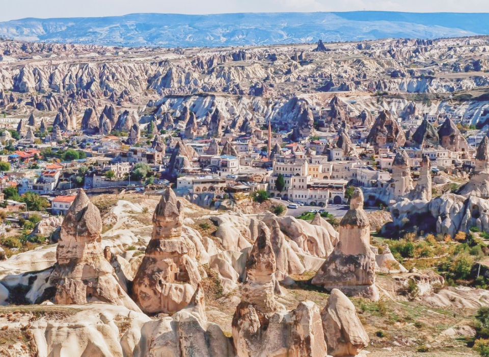
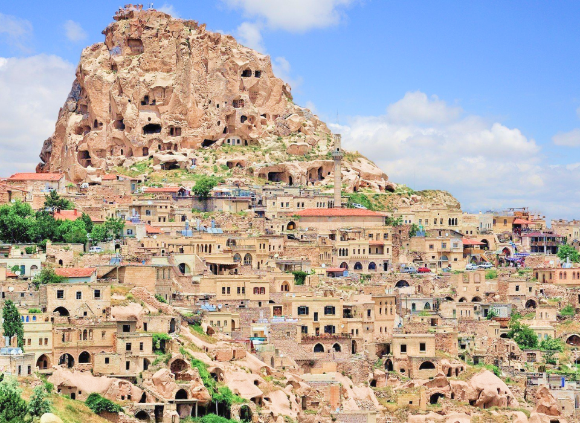
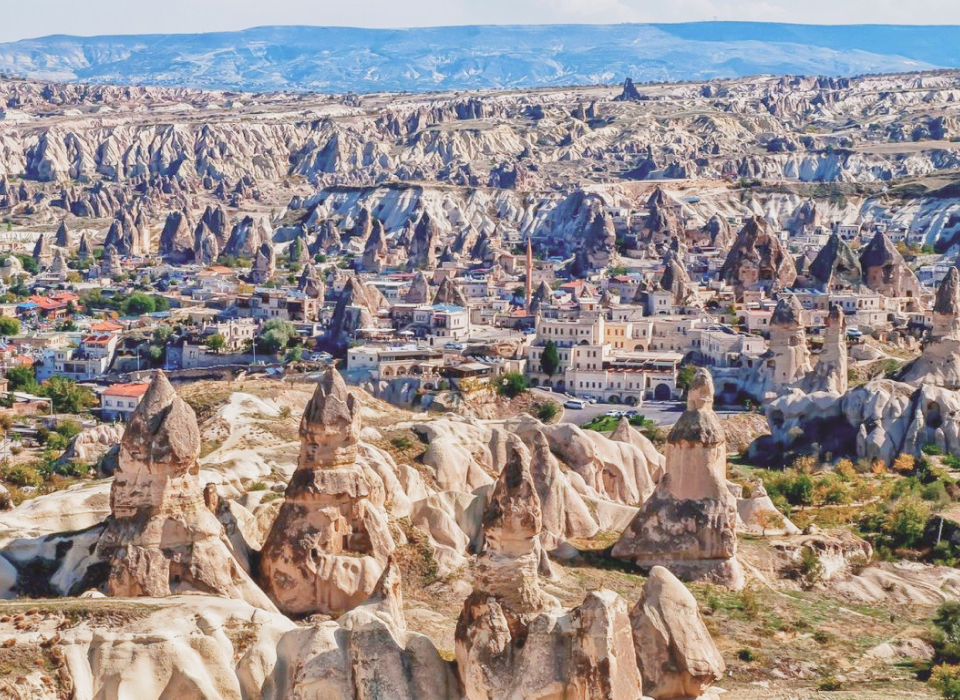

Сказочная страна чудес
 



Каппадокия - сказочная страна воздушных шаров, сырных домиков, разноцветных дол ин и волшебных рассветов! Сюда приезжают, чтобы увидеть природные чудеса, полетать на воздушном шаре и конечно же сделать миллион красивых фотографий!
Участников тура ждёт профессиональная фотосессия от лучших фотографов Каппадокии! Ведь именно за волшебными фото на рассвете на фоне воздушных шаров сюда приезжают люди со всего мира!
Также Вы увидите:
Музей на открытом воздухе в Гёреме Ущелье Ыхлара и монастырь Селиме Подземные города Крепость Учхисар Зельве и Пашабаг
и многие другие достпримечательности.
Местная кухня — один из поводов посетить Каппадокию, здесь есть рестораны на любой бюджет.